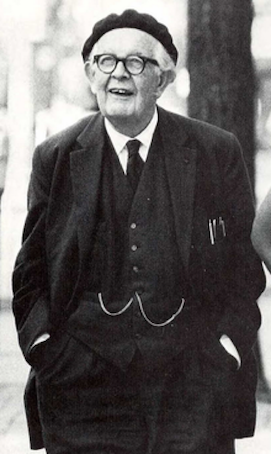

Developmental psychology
Krzysztof Basiński
Developmental psychology
- Developmental psychology is the scientific study of how and why human beings change over the course of their life.
- Originally concerned with infants and children, the field has expanded to include adolescence, adult development, aging, and the entire lifespan.
- Examines the influences of nature and nurture on the process of human development
Developmental psychology
- Examines change across a broad range of topics including:
- motor skills cognitive development
- executive functions
- moral understanding
- language acquisition
- social change
- personality
- emotional development
- self-concept
- identity formation
Attachment theory (J. Bowlby)
- A psychological model that attempts to describe the dynamics of long-term and short-term interpersonal relationships between humans
- How human beings respond within relationships when hurt, separated from loved ones, or perceiving a threat?
- An infant needs to develop a relationship with at least one primary caregiver for the child’s successful social and emotional development
Types of attachment
- Secure
- Anxious-avoidant
- Anxious-ambivalent
- Disorganized
Secure attachment
- Child will explore freely while the caregiver is present, typically engages with strangers, is often visibly upset when the caregiver departs, and is generally happy to see the caregiver return
- Parents who consistently (or almost always) respond to their child’s needs will create securely attached children
- Such children are certain that their parents will be responsive to their needs and communications.
Anxious-ambivalent
- A child with an anxious-ambivalent pattern will typically explore little and is often wary of strangers, even when the parent is present
- When the mother departs, the child is often highly distressed
- The child is generally ambivalent when she returns
- The anxious-ambivalent strategy is a response to unpredictably responsive caregiving
Anxious-avoidant
- An infant with an anxious-avoidant pattern of attachment will avoid or ignore the caregiver — showing little emotion when the caregiver departs or returns
- The infant will not explore very much regardless of who is there.
- Ainsworth and Bell theorised that the apparently unruffled behaviour of the avoidant infants was in fact a mask for distress, a hypothesis later evidenced through studies of the heart-rate of avoidant infants
Piaget’s theory of cognitive development
Jean Piaget (1896-1980) 
Piaget’s theory of cognitive development
- Comprehensive theory about the nature and development of human intelligence
- Development - progressive reorganization of mental processes resulting from biological maturation and environmental experience
- Four stages of development
- Sensorimotor
- Preoperational
- Concrete operational
- Formal operational
Sensorimotor stage
- From birth to acquisition of language (0-24 months)
- Infants gain knowledge of the world from the physical actions they perform within it
- Object permanence is a child’s understanding that objects continue to exist even though he or she cannot see or hear them
- By the end of the sensorimotor period, children develop a permanent sense of self and object
Preoperational stage
- 2-7 years
- Children do not yet understand concrete logic and cannot mentally manipulate information
- I.e. if a < b and b < c than is a < c ?
- Egocentric thinking (difficulty seeing other’s point of view)
Concrete operational stage
- 7-11 years
- Logical thinking
- Elimination of egocentrism
- At this stage child learns rules such as conservation of volume, mass etc.
- Inductive resoning, still problems with deductive reasoning
A few concerns
- Theory concerned with cognitive development only
- Stages of development do not have strict age boundaries
- Not all people reach formal operational stage – association with intelligence